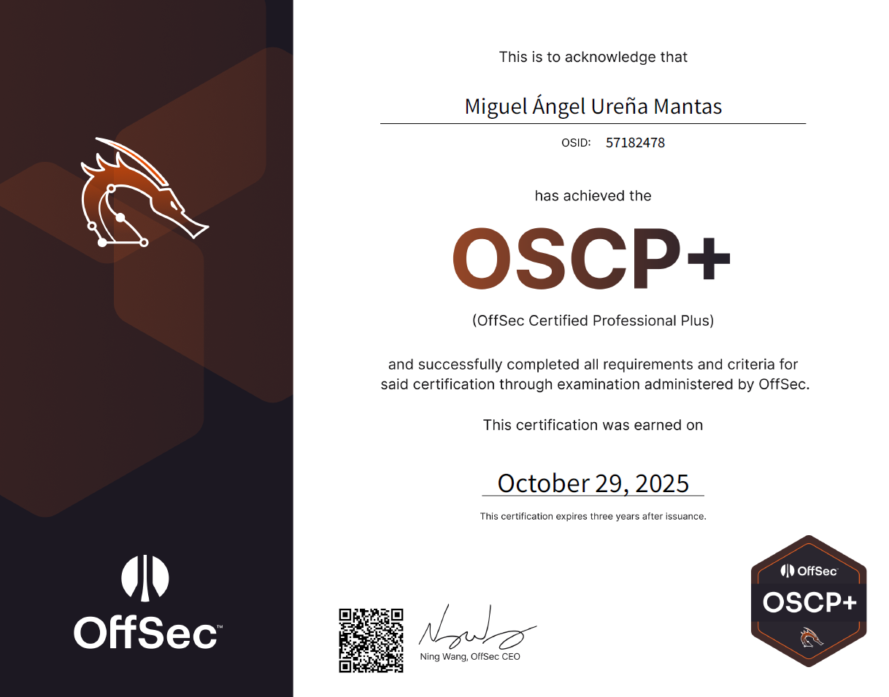
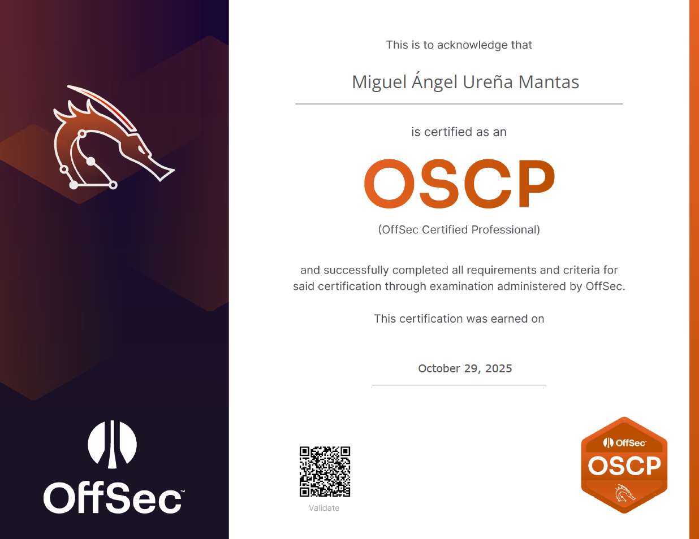

OSCP
29 octubre 2025
Introducción
La OSCP (Offensive Security Certified Professional) es una certificación de hacking ético ofrecida por Offensive Security (OffSec), una organización reconocida por su enfoque completamente práctico dentro de la ciberseguridad. A diferencia de otras certificaciones más teóricas, aquí no hay preguntas tipo test: tienes que comprometer máquinas reales en un laboratorio y demostrar que sabes lo que haces.
El examen es bastante particular: consiste en un entorno controlado con varias máquinas vulnerables que debes explotar en un tiempo limitado (alrededor de 24 horas), y además documentar todo el proceso en un informe técnico, como si fuese un pentest real.
Durante la preparación y el propio examen, se trabajan aspectos clave como enumeración, explotación de vulnerabilidades, escalada de privilegios o post-explotación. Es decir, no se trata solo de usar herramientas, sino de entender cómo funcionan los sistemas y pensar como un atacante.
Reflexiones
Después de bastante tiempo de práctica, laboratorio y muchas horas delante de la terminal, puedo decir que he conseguido la certificación OSCP. Más allá del título, el proceso ha sido una experiencia bastante exigente que obliga a desarrollar metodología, perseverancia y capacidad de resolver problemas por uno mismo.
El examen tuvo su propia historia. Conseguí sacar el 100% de las flags, aunque no fue precisamente un camino limpio. En medio del proceso me comí un rabbit hole bastante serio que me costó unas 5 horas de mi vida, de esas en las que estás convencido de que estás a punto de descubrir algo increíble… pero en realidad no hay absolutamente nada. Básicamente, una masterclass de cómo complicarse la vida solo. Aun así, conseguí reconducir la situación, volver a lo básico y terminar comprometiendo todas las máquinas. Al final, además de las flags, me llevé una lección bastante clara: si algo no cuadra, probablemente no cuadra… y no eres tú "descubriendo algo avanzado".
Certificado

